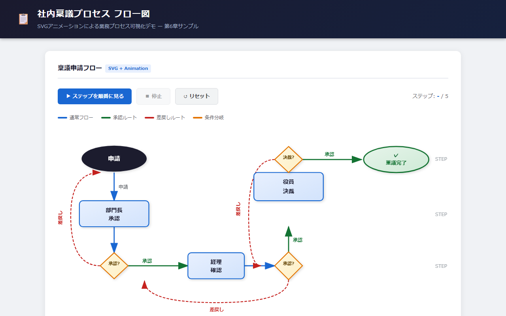

第6章 図解・フロー図・概念図をHTML＋SVGで扱う
📂 本章のサンプルファイル:ch06_animated_flow.html
ブラウザで開くと、本章で解説するHTMLコンテンツを実際に操作できます。
本書サポートサイトからダウンロードしてください。
6-1 「図を描く」ツールの現状と限界
その図は、いつ描かれたものですか
あなたの組織で、業務フロー図や組織図が壁に貼られていたり、社内のドキュメントフォルダに保存されていたりするとします。そのとき、ひとつ確認してみてください。その図はいつ描かれ、最後に更新されたのはいつでしょうか。
多くの場合、答えは「わからない」か「ずいぶん前」のどちらかです。
新人が入社したとき、先輩が「これを見ておいて」と渡してくれた採用プロセスの図。印刷されてファイルに挟まれているか、PowerPointファイルとしてフォルダに眠っているその図は、果たして今も正確でしょうか。半年前に変わった承認フローは反映されていますか。担当者が異動して別の人になったことは、どこかに書かれていますか。
こうした「情報の腐敗」は、図というフォーマットの宿命的な問題です。
PowerPoint・Visio・draw.io——それぞれの強みと制約
現在のビジネスで使われる図解ツールを整理してみましょう。
PowerPointは最もよく使われる図解ツールです。図形の挿入、矢印の配置、テキストボックスの追加——直感的な操作でそれなりの図が作れます。しかし、これはあくまでプレゼンテーションのためのスライドツールです。図形の整列が手作業で面倒だったり、バージョン管理ができなかったりと、「図を管理する」という観点では限界があります。
Microsoft Visioは専門的な図解ツールで、業務フローや組織図を丁寧に描くための機能を持っています。ただしライセンスが高価で、Visioを持っていない方は図を開くことすらできません。共有の観点で言えば、これは致命的な問題です。
draw.io（diagrams.net）は無料で使えるWebベースの図解ツールで、フローチャートやUMLなど多様な図形ライブラリを持っています。Googleドライブと連携できる点も便利です。ただし、作成した図を書き出すと画像ファイルになり、そこからは「更新できない静的な絵」になってしまいます。
図は「ファイル」である限り更新が届かない
PowerPoint、Visio、draw.ioに共通する本質的な問題は、図が「ファイル」として存在しているという点です。
ファイルには三つの問題があります。
第一に、バージョンが分散するという問題です。図を更新した人は最新版を持っていますが、一度共有した相手のパソコンにある古いバージョンは変わりません。「どれが最新ですか」という質問が定期的に飛び交うのは、この問題の典型的な症状です。
第二に、更新のモチベーションが下がるという問題です。図を修正するには、元のファイルを開き、図形を選択し、テキストを書き直し、矢印を調整し、また保存して共有し直す——この手順の多さが、「少し変わったけどまあいいか」という判断を生み出します。
第三に、図がコンテキストから切り離されるという問題です。PowerPointのフロー図を説明するためには、会議を開いてスクリーンに映すか、ファイルをメールで送るかしかありません。図が他の情報（マニュアル・手順書・ダッシュボード）と連携する方法がありません。
では、図をHTMLの一部にしたらどうなるでしょうか。URLで共有できる、いつでも最新版を誰でも見られる、他の情報と一緒に表示できる——この三つが自然に解決されます。
6-2 SVGとは何か——なぜHTML時代の図解に向いているか
「画像」と「数式で描いた図」の違い
図をHTMLに組み込む方法として、まず思いつくのは「画像を貼り付ける」ことでしょう。PNGやJPEGの画像ファイルをHTMLに埋め込むことは確かにできます。しかしこれでは、前節で説明した「ファイルの問題」を解決することはできません。
SVG（Scalable Vector Graphics：スケーラブル・ベクター・グラフィックス）は、これとは根本的に異なる仕組みを持つ画像形式です。
普通の画像（PNGやJPEG）は、画面上のドット（ピクセル）の集合体として情報を持っています。200ピクセルの画像を400ピクセルに引き伸ばせば、ドットが引き伸ばされてぼやけます。これを「ビットマップ画像」と呼びます。
SVGは異なります。「中心から30ピクセルのところに半径10ピクセルの円を描く」「(10, 20)から(200, 20)に向かって矢印を引く」という命令の集合体として図形を記述します。どんなサイズに拡大しても、命令に従って新たに描き直すため、常にシャープな表示になります。プレゼンを大型スクリーンに映しても、スマートフォンの小さな画面で見ても、SVGの図は粗くなりません。
HTMLに直接埋め込めるSVGの特性
SVGの最大の特徴は、HTMLファイルの中にそのままコードとして書けることです。画像ファイルのように外部ファイルを参照する必要がなく、HTMLの一部として図が存在します。
これが何を意味するかというと、CSS（スタイルシート）でスタイルを変えられること、JavaScriptで動きを付けられること、そして図の内容がHTMLのテキストと同じように検索できること——この三つです。
たとえば、組織図をSVGで描いた場合、企業のブランドカラーが変わったときにCSSの一行を変えるだけで、組織図全体の色が更新されます。ダークモード対応も、CSS変数を使えば自動的に行われます。
SVGのコードを初めて見ると難しそうに見えますが、基本的な構造はシンプルです。
<svg width="300" height="150" xmlns="http://www.w3.org/2000/svg">
<!-- 四角形（箱） -->
<rect x="10" y="10" width="120" height="50"
fill="#ebf4ff" stroke="#2c5282" stroke-width="2" rx="6"/>
<!-- テキスト -->
<text x="70" y="42" text-anchor="middle" font-size="14" fill="#2c5282">
申請
</text>
<!-- 矢印 -->
<line x1="130" y1="35" x2="170" y2="35"
stroke="#4a5568" stroke-width="2"
marker-end="url(#arrow)"/>
<!-- 矢印の定義 -->
<defs>
<marker id="arrow" markerWidth="10" markerHeight="7"
refX="10" refY="3.5" orient="auto">
<polygon points="0 0, 10 3.5, 0 7" fill="#4a5568"/>
</marker>
</defs>
<!-- 二つ目の箱 -->
<rect x="170" y="10" width="120" height="50"
fill="#ebf4ff" stroke="#2c5282" stroke-width="2" rx="6"/>
<text x="230" y="42" text-anchor="middle" font-size="14" fill="#2c5282">
審査
</text>
</svg>このSVGをHTMLファイルの中に貼り付けると、「申請 → 審査」という簡単なフロー図が表示されます。
もちろん、このコードを自分で書く必要はありません。「矢印でつながった二つのボックス、左に『申請』右に『審査』と書いて」と生成AIに依頼するだけで、同等のSVGが生成されます。
💡 AIへの依頼例
【目的】業務フローをSVGアニメーション付きのフロー図として作りたい
【含める要素】5ステップ（受付→確認→審査→承認→完了）、横並び矢印でつなぐ、各ステップをクリックすると詳細がポップアップ表示、ステップが左から順番に光るアニメーション
【スタイル】ライトブルー背景・濃いブルーテキスト、最終ステップはグリーン、矢印はグレー
【出力形式】完全なHTMLファイルとして出力してください
このプロンプトをそのままClaude/ChatGPT/Geminiに貼り付けて使えます。
生成AIにSVGを描いてもらう
SVGについて知っていただきたいのは、仕組みの詳細ではなく「生成AIが非常に得意とする分野」だということです。
SVGはテキスト（コード）で記述されるため、生成AIが自然言語の指示から生成するのに向いています。「PowerPointで図形を手で並べる」という作業と「生成AIにSVGコードを生成してもらう」という作業を比べたとき、後者のほうが速く、修正も容易で、バージョン管理もしやすいという優位性があります。
たとえば次のような依頼が可能です。
「5ステップの業務フロー図をSVGで作って。ステップは『受付 → 確認 → 審査 → 承認 → 完了』の順番。横並びで矢印でつなぎ、各ボックスはライトブルーの背景に濃いブルーのテキスト」
この依頼に対して生成AIが生成するSVGコードは、そのままHTMLに貼り付けて使えます。細部が気に入らなければ「承認ボックスを黄色にして」「ステップの下に担当部門名も入れて」と修正指示を続けるだけです。
6-3 業務で使う図解パターン
業務フロー図・プロセス図
業務フロー図は、業務の手順や承認の流れを可視化するための図です。「誰が」「何をして」「次の誰に渡すか」を順序立てて表現します。
HTMLとSVGを組み合わせると、業務フロー図に次のような表現を追加できます。
- 各ステップをクリックすると詳細が表示される：フロー図の各ボックスをクリックしたとき、そのステップの担当者・所要時間・注意事項などの詳細情報がポップアップや下部エリアに表示されます
- ステップにマウスを乗せると色が変わる：フロー図を見ながら「今どこを説明しているか」を視覚的に示すためのハイライト効果です
以下は、発注プロセスの業務フロー図をHTML+SVGで実装した例です。
<!DOCTYPE html>
<html lang="ja">
<head>
<meta charset="UTF-8">
<title>発注承認フロー</title>
<style>
body { font-family: sans-serif; padding: 24px; background: #f7fafc; }
h1 { font-size: 1.3rem; color: #2d3748; margin-bottom: 20px; }
svg text { font-family: sans-serif; }
.step-box { cursor: pointer; }
.step-box rect { transition: fill 0.2s; }
.step-box:hover rect { fill: #bee3f8; }
#detail {
margin-top: 20px;
background: white;
border: 1px solid #e2e8f0;
border-radius: 8px;
padding: 16px;
min-height: 60px;
color: #4a5568;
}
</style>
</head>
<body>
<h1>発注承認フロー（ステップをクリックして詳細確認）</h1>
<svg width="700" height="120" xmlns="http://www.w3.org/2000/svg">
<defs>
<marker id="arr" markerWidth="8" markerHeight="6"
refX="8" refY="3" orient="auto">
<polygon points="0 0, 8 3, 0 6" fill="#718096"/>
</marker>
</defs>
<!-- ステップボックスと矢印 -->
<g class="step-box" onclick="showDetail('受付', '購買担当が発注依頼書を受領。内容の形式チェックと必要書類の確認を行います。所要時間：1営業日')">
<rect x="10" y="30" width="110" height="50" rx="6" fill="#ebf4ff" stroke="#4299e1" stroke-width="1.5"/>
<text x="65" y="60" text-anchor="middle" font-size="13" fill="#2b6cb0">受付</text>
</g>
<line x1="120" y1="55" x2="150" y2="55" stroke="#718096" stroke-width="1.5" marker-end="url(#arr)"/>
<g class="step-box" onclick="showDetail('内容確認', '発注内容・金額・仕様が要件を満たしているか確認します。不備がある場合は差し戻し。所要時間：2営業日')">
<rect x="150" y="30" width="110" height="50" rx="6" fill="#ebf4ff" stroke="#4299e1" stroke-width="1.5"/>
<text x="205" y="60" text-anchor="middle" font-size="13" fill="#2b6cb0">内容確認</text>
</g>
<line x1="260" y1="55" x2="290" y2="55" stroke="#718096" stroke-width="1.5" marker-end="url(#arr)"/>
<g class="step-box" onclick="showDetail('上長承認', '50万円以上の発注は部長承認が必要。承認システム上で電子署名を行います。所要時間：3営業日以内')">
<rect x="290" y="30" width="110" height="50" rx="6" fill="#ebf4ff" stroke="#4299e1" stroke-width="1.5"/>
<text x="345" y="60" text-anchor="middle" font-size="13" fill="#2b6cb0">上長承認</text>
</g>
<line x1="400" y1="55" x2="430" y2="55" stroke="#718096" stroke-width="1.5" marker-end="url(#arr)"/>
<g class="step-box" onclick="showDetail('発注実行', '承認後、購買システムから発注書を発行。取引先にメールで送付します。所要時間：当日中')">
<rect x="430" y="30" width="110" height="50" rx="6" fill="#ebf4ff" stroke="#4299e1" stroke-width="1.5"/>
<text x="485" y="60" text-anchor="middle" font-size="13" fill="#2b6cb0">発注実行</text>
</g>
<line x1="540" y1="55" x2="570" y2="55" stroke="#718096" stroke-width="1.5" marker-end="url(#arr)"/>
<g class="step-box" onclick="showDetail('完了', '発注書番号を依頼者に通知。納期管理は物流担当へ引き継ぎます。')">
<rect x="570" y="30" width="110" height="50" rx="6" fill="#c6f6d5" stroke="#276749" stroke-width="1.5"/>
<text x="625" y="60" text-anchor="middle" font-size="13" fill="#276749">完了</text>
</g>
</svg>
<div id="detail">← ステップをクリックすると、このエリアに詳細が表示されます。</div>
<script>
function showDetail(step, desc) {
document.getElementById('detail').innerHTML =
'<strong>【' + step + '】</strong><br>' + desc;
}
</script>
</body>
</html>このフロー図は、PowerPointで作ったフロー図と見た目では大きな差がないように思えるかもしれません。しかし重要な違いがあります。各ステップをクリックするたびに詳細が表示されるインタラクション、URLで誰でも開ける共有性、ブラウザ上でそのまま閲覧できる環境非依存性——これらはPowerPointにはない特性です。
組織図・関係図
組織図は「誰が誰の上司で、どのチームに属しているか」を示す図です。人事異動のたびに更新が必要で、かつ更新されないまま古くなりやすい、業務現場の「腐りやすい図」の代表格です。
HTMLとSVGで組織図を作ることの最大のメリットは、人事データと連動させられる点です。社員名簿のデータをJSONとして用意し、JavaScriptがそれを読み込んで組織図を動的に生成する構造を取れば、人事異動時には人事担当者がJSONファイルを更新するだけで、組織図も自動的に更新されます。図を「描き直す」という作業が不要になるのです。
<!DOCTYPE html>
<html lang="ja">
<head>
<meta charset="UTF-8">
<title>部門組織図</title>
<style>
body { font-family: sans-serif; padding: 24px; background: #f7fafc; }
h1 { font-size: 1.3rem; color: #2d3748; margin-bottom: 16px; }
.org-node {
display: inline-block;
background: white;
border: 2px solid #4299e1;
border-radius: 8px;
padding: 10px 20px;
font-size: 0.9rem;
color: #2c5282;
font-weight: bold;
}
.children {
display: flex;
gap: 24px;
justify-content: center;
margin-top: 20px;
padding-top: 20px;
border-top: 2px solid #bee3f8;
}
.org-branch { text-align: center; }
.org-branch .org-node {
border-color: #68d391;
color: #276749;
font-weight: normal;
}
</style>
</head>
<body>
<h1>営業本部 組織図</h1>
<div style="text-align:center;">
<div class="org-node">営業本部長 ／ 鈴木 一郎</div>
<div class="children">
<div class="org-branch">
<div class="org-node">東日本営業部<br>部長：田中 明子</div>
</div>
<div class="org-branch">
<div class="org-node">西日本営業部<br>部長：佐藤 健一</div>
</div>
<div class="org-branch">
<div class="org-node">オンライン営業部<br>部長：山田 花子</div>
</div>
</div>
</div>
</body>
</html>このHTMLの組織図は、シンプルなCSSだけで実現しています。複雑なSVGコードを書かなくても、HTMLとCSSの組み合わせで基本的な組織図は表現できます。より複雑な階層構造には、生成AIに依頼してSVGベースの組織図を生成してもらうのが効率的です。
💡 AIへの依頼例
【目的】部署の組織図をMermaid.jsで作りたい
【含める要素】本部長→3部長→各部長に2名の課長という3階層、各ノードに氏名と役職を表示、ノードをクリックすると担当業務の説明がポップアップ
【スタイル】上から下に流れるレイアウト、本部長はブルー、部長はライトブルー、課長はホワイト背景
【出力形式】完全なHTMLファイルとして出力してください（Mermaid.jsはCDN読み込みで）
このプロンプトをそのままClaude/ChatGPT/Geminiに貼り付けて使えます。
概念図・マインドマップ的な図解
業務フロー図や組織図が「決まった構造」を持つのに対し、概念図は「関係性の表現」です。KPIツリー、戦略マップ、プロジェクトの相関図——抽象的な概念の結びつきを視覚化するために使われます。
HTMLとSVGで概念図を作る際、生成AIへの依頼は「ノードとエッジ」という概念を使うと伝わりやすくなります（ノードとは図の中の各要素、エッジとはそれをつなぐ線のことです）。
「以下の3要素をノードとして、関係性をエッジ（矢印）で結んだ概念図をSVGで作って：顧客満足度（中心）← 品質（左）、スピード（右上）、価格（右下）」
こうした依頼に対して生成AIが作成するSVGを、そのままHTMLに埋め込んで使います。
💡 AIへの依頼例
【目的】KPIの因果関係を概念図（SVG）で視覚化したい
【含める要素】中心ノードに「顧客満足度」、左に「品質」「スピード」、右に「価格」「サポート」を配置、矢印の太さで影響度の強弱を表現、各ノードにマウスを乗せると数値目標がツールチップ表示
【スタイル】ノードは角丸の四角形、背景は薄いグラデーション、矢印はブルー系
【出力形式】完全なHTMLファイルとして出力してください
このプロンプトをそのままClaude/ChatGPT/Geminiに貼り付けて使えます。
データを元に自動生成される図
ここまで紹介した図は、内容をあらかじめ決めて作る「静的な図」でした。しかしHTMLとSVGの組み合わせが最もその力を発揮するのは、データが変わると図も変わるという動的な図解です。
例として、売上データを元にSVGで棒グラフを自動生成するコードを見てみましょう。
<!DOCTYPE html>
<html lang="ja">
<head>
<meta charset="UTF-8">
<title>SVG棒グラフ（自動生成）</title>
<style>
body { font-family: sans-serif; padding: 24px; background: #f7fafc; }
h1 { font-size: 1.3rem; color: #2d3748; margin-bottom: 20px; }
</style>
</head>
<body>
<h1>部門別売上（SVG自動生成）</h1>
<svg id="chart" width="500" height="280" xmlns="http://www.w3.org/2000/svg">
</svg>
<script>
// ← このデータを変えるだけでグラフが変わる
const data = [
{ label: "東日本", value: 532 },
{ label: "西日本", value: 461 },
{ label: "オンライン", value: 237 },
{ label: "海外", value: 189 },
];
const svg = document.getElementById('chart');
const maxVal = Math.max(...data.map(d => d.value));
const barWidth = 80;
const gap = 20;
const chartHeight = 200;
const topPadding = 20;
const leftPadding = 30;
const colors = ['#4299e1', '#48bb78', '#ed8936', '#9f7aea'];
data.forEach((d, i) => {
const x = leftPadding + i * (barWidth + gap);
const barH = (d.value / maxVal) * chartHeight;
const y = topPadding + (chartHeight - barH);
// バー
const rect = document.createElementNS('http://www.w3.org/2000/svg', 'rect');
rect.setAttribute('x', x);
rect.setAttribute('y', y);
rect.setAttribute('width', barWidth);
rect.setAttribute('height', barH);
rect.setAttribute('fill', colors[i]);
rect.setAttribute('rx', '4');
svg.appendChild(rect);
// 数値ラベル
const valText = document.createElementNS('http://www.w3.org/2000/svg', 'text');
valText.setAttribute('x', x + barWidth / 2);
valText.setAttribute('y', y - 6);
valText.setAttribute('text-anchor', 'middle');
valText.setAttribute('font-size', '12');
valText.setAttribute('fill', '#4a5568');
valText.textContent = d.value + '万円';
svg.appendChild(valText);
// ラベル
const label = document.createElementNS('http://www.w3.org/2000/svg', 'text');
label.setAttribute('x', x + barWidth / 2);
label.setAttribute('y', topPadding + chartHeight + 20);
label.setAttribute('text-anchor', 'middle');
label.setAttribute('font-size', '13');
label.setAttribute('fill', '#2d3748');
label.textContent = d.label;
svg.appendChild(label);
});
</script>
</body>
</html>このコードのポイントは、data という配列の中身を変えるだけで、グラフ全体が自動的に再描画されることです。新しい部門を追加したければ、配列にオブジェクトを一行追加するだけです。「グラフを描き直す」という作業が「データを更新する」という作業に変わります。
6-4 Mermaid.jsという選択肢
テキストで図を書く——という発想の転換
ここまでSVGについて説明してきましたが、SVGのコードを生成AIなしに書くのはやはり一定のハードルがあります。そこで、もっとシンプルに「テキストで図を宣言する」方法を紹介します。それがMermaid.js（マーメイド・ジェイエス）です。
Mermaid.jsは、テキストで書いた指示から図を自動生成するJavaScriptライブラリです。
たとえば、次のテキストを書くと：
graph LR
A[受付] --> B[確認]
B --> C{承認可否}
C -->|承認| D[発注実行]
C -->|差戻| A
D --> E[完了]このテキストが自動的に、ボックスと矢印と分岐を持つフローチャートに変換されます。
Mermaid.jsの文法と特徴
Mermaid.jsの特徴は、その宣言型の文法にあります。「AからBに矢印を引く」という命令ではなく、「AはBにつながる」という関係を宣言するだけで、レイアウトを自動的に計算して図を配置してくれます。図形の位置を手動で調整する必要がないのです。
また、フローチャートだけでなく、シーケンス図（処理の時系列を示す図）、クラス図（データ構造を示す図）、ガントチャート（工程管理表）など多様な図の種類に対応しています。
以下は、HTML内でMermaid.jsを使うための完全なコード例です。
<!DOCTYPE html>
<html lang="ja">
<head>
<meta charset="UTF-8">
<title>業務フロー（Mermaid.js）</title>
<script src="https://cdn.jsdelivr.net/npm/mermaid@10/dist/mermaid.min.js"></script>
<style>
body { font-family: sans-serif; padding: 24px; background: #f7fafc; }
h1 { font-size: 1.3rem; color: #2d3748; margin-bottom: 20px; }
.mermaid { background: white; padding: 24px; border-radius: 10px; }
</style>
</head>
<body>
<h1>採用プロセスフロー</h1>
<div class="mermaid">
graph LR
A([応募受付]) --> B[書類選考]
B --> C{通過？}
C -->|合格| D[一次面接]
C -->|不合格| Z([不採用通知])
D --> E{通過？}
E -->|合格| F[最終面接]
E -->|不合格| Z
F --> G{採用判定}
G -->|内定| H([内定通知])
G -->|見送り| Z
</div>
<script>
mermaid.initialize({ startOnLoad: true, theme: 'default' });
</script>
</body>
</html><script src="...mermaid.min.js"> の一行でMermaid.jsを読み込み、<div class="mermaid"> の中にテキストで図を書くだけで、ブラウザが美しいフローチャートを描画してくれます。
生成AIにMermaid.jsコードを生成させる
Mermaid.jsと生成AIの組み合わせは、特に相性が良いと言えます。
Mermaid.jsのコードはテキストなので、生成AIが自然言語の説明からコードを生成するのが非常に得意です。たとえば：
「採用プロセスを Mermaid.js のフローチャートで作って。ステップは：応募 → 書類選考（通過/不合格で分岐）→ 一次面接（通過/不合格で分岐）→ 最終面接 → 内定/不採用。左から右に流れる方向で」
この依頼に対して生成AIが出力するMermaid.jsコードは、そのままHTMLに貼り付けるだけで動作します。
プロセスが変わったときも、生成AIへの修正依頼は直感的です。「一次面接の後に『適性検査』のステップを追加して」と言えば、既存のフローに適切にステップが挿入されたコードが返ってきます。PowerPointで矢印と図形を手動で追加し直す作業と比べて、何倍も速く、美しい結果が得られます。
Mermaid.jsが使われている場所
Mermaid.jsの普及度は、ビジネスツールとしての信頼性を示す一つの指標です。
GitHubでは、README.mdやIssueの中にMermaid.jsのコードを書くと、自動的に図として表示されます。技術ドキュメントでの利用が一般的になっています。
Notionでは、「コードブロック」にMermaid.jsの言語を指定すると、フロー図が表示されます。
GitLab、Confluence、Obsidianなど多くのナレッジ管理ツールでも対応が進んでいます。
ビジネスで使われているツールの多くがMermaid.jsに対応しているということは、あなたが学んだ「テキストで図を書く」というスキルが、多様な場面で活用できることを意味します。
〔コラム〕 図解は「描く」ものから「宣言する」ものへ
図を「描く」とはどういうことでしょうか。PowerPointで図形を一つひとつ配置し、矢印を引いて整列する——この作業は、本質的には「どこに何を置くか」という座標の管理作業です。
Mermaid.jsが提案するのは全く異なる哲学です。「AはBにつながる」という関係性を宣言するだけで、配置はシステムが計算します。人間がすることは「何と何がどういう関係にあるか」を言語化することだけです。
この発想の転換は、プログラミングの世界で「宣言型プログラミング」と呼ばれる概念に近いものです。「どうやって描くか（手順）」ではなく「何を描くか（宣言）」に集中する——これは図解だけでなく、仕事全般に広げられる思考様式かもしれません。
生成AIに「このプロセスをフロー図にして」と依頼することも、同じ哲学の延長です。「どう描くか」を考えるエネルギーを「何を伝えるか」に集中させる。それがこれからの図解の姿です。
読者への問いかけ
あなたの組織で、作った当初のまま古くなっている図解はありますか。その図は最後に誰が更新しましたか。もし「業務フロー図がいつでも最新版を自動表示してくれる」としたら、それはあなたのチームのコミュニケーションをどう変えるでしょうか。
Mermaid.jsで図を「描く」のではなく「宣言する」というアプローチを、一度だけ試してみてください。生成AIに「私のチームの〇〇プロセスをMermaid.jsのフロー図で作って」と依頼する——それだけで体験は始まります。

ch06_animated_flow.html
本書サポートサイトよりダウンロードし、ブラウザで開いてご確認ください。
まとめ
この章では、「図をファイルとして持つ」という従来の常識を問い直し、図をHTMLの一部にすることで得られる新しい可能性を探りました。
主なポイントを振り返ります。
- ファイルとしての図の限界：PowerPoint・Visio・draw.ioで作った図は、配布した瞬間から「更新が届かない静的な絵」になります。このライフサイクル管理の問題が、職場の「古い図問題」の根本原因です
- SVGはHTMLに直接埋め込める：画像ではなくコードとして図を持つことで、CSSで色を変え、JavaScriptでインタラクションを加え、データと連動させることが可能になります
- 生成AIがSVGの書き方を代替する：SVGのコードを自分で書く必要はありません。「このフローをSVGで」という指示で生成AIが描いてくれます
- 業務フロー・組織図・概念図・データ駆動図：それぞれの図解パターンに応じたHTMLとSVGの活用方法があります
- Mermaid.jsはテキストで図を宣言する：SVGより高いレベルの抽象度で、「関係性を記述する」だけで図が生成されます。GitHubやNotionなど多くのツールで標準対応が進んでいます
図解の仕事を「手で描く作業」から「関係性を言語化する作業」に変える——これは、技術の問題ではなく認識の転換です。その転換の先に、常に最新版が保たれ、URLで共有でき、データと連動して変化する「生きた図」が待っています。
次章への橋渡し
この章では、図解という情報の表現方法をHTMLとSVGで扱う方法を探りました。表もグラフも図も、HTMLという一つのファイルの中に統合できることがわかったと思います。
次の第7章では、こうした表・グラフ・図解を組み合わせたHTMLページを「チームや組織の情報インフラ」として活用する方法を考えます。
社内ポータル、ナレッジ共有ページ、オンボーディング資料——これらは従来、SharePointや社内Wikiなど専用ツールの領域でした。しかし生成AIでHTMLが作れるようになった今、個人やチームが自分たちのニーズに合ったページを自分で作れる時代が来ています。誰もが「ミニ社内ポータル」を持てるとしたら、職場の情報共有はどう変わるでしょうか。次章で一緒に考えていきましょう。